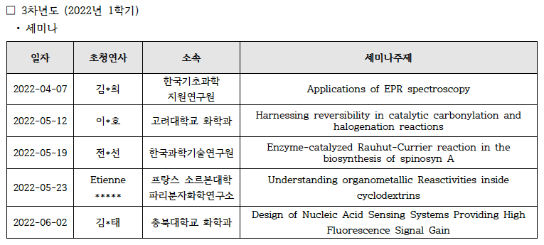
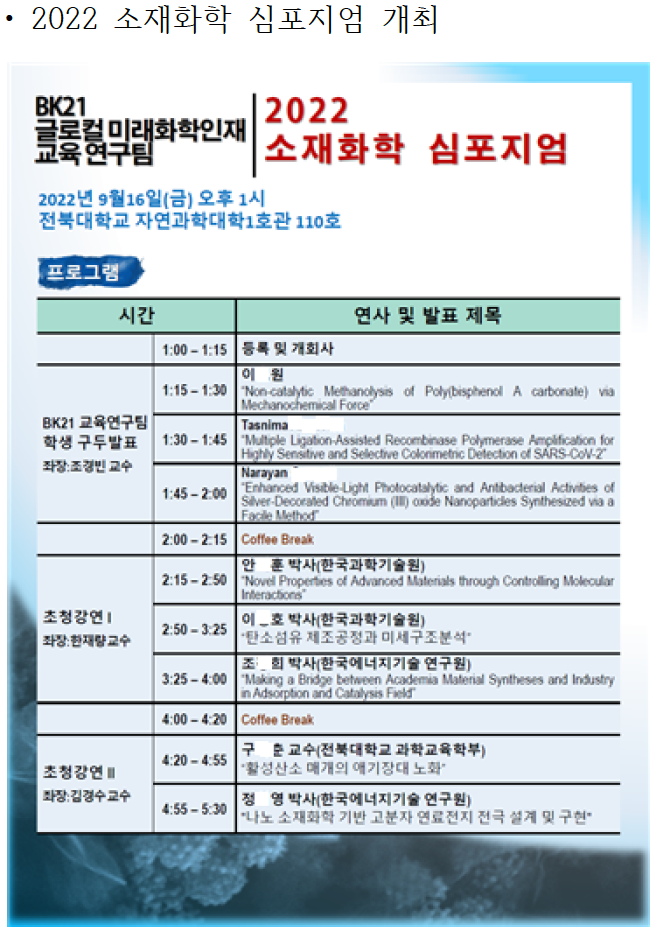
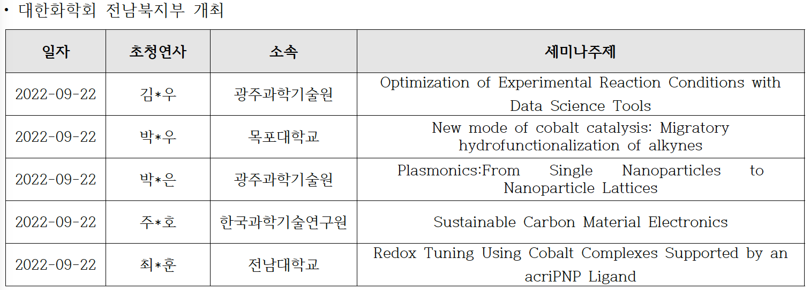
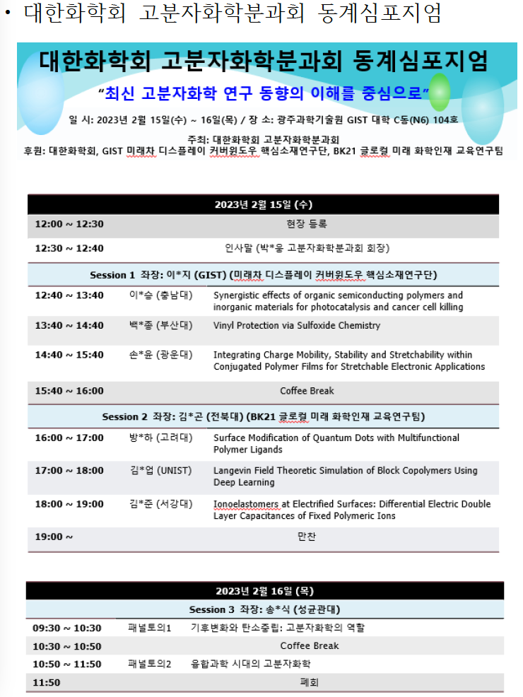

Publications
Electronic Effect on Phenoxide Migration at a Nickel(II) Center Supported by a Tridentate Bis(phosphinophenyl)phosphido Ligand
Inorg. Chem. 62(7) (2023) 3007-3017
K. Lee, N. Kim, K.-B. Cho, and Y. Lee
Two-Electron-Induced Reorganization of Cobalt Coordination and Metal−Ligand Cooperative Redox Shifting Co(I) Reactivity toward CO2 Reductions
Inorg. Chem. 62(5) (2023) 2326-2333
S. Song, W. Lee, Y. Lee, K.-B. Cho, J. Lee, and J. Seo
Postpolymerization Modification of Sterically Demanding Poly(methacrylic acid) with Allene Sulfonamides
Polym. Chem (2023) in press
Shin, H. G.; Pradhan, T.; Park, J. K.; Kim, J. G.
Mechanochemical Solid-State Vinyl Polymerization with Anionic Initiator
Faraday Discuss (2023) in press
Yoo, K.; Lee, G. S.; Lee, H. W.; Kim, B.-S.; Kim, J. G
Multiple ligation–Assisted recombinase polymerase amplification for highly sensitive and selective colorimetric detection of SARS-CoV-2
Talanta 252 (2023) 123835
Tasnima Alam Asa, Pradeep Kumar, Jaehyeon Lee, Young Jun Seo
Copper complex of a thienyl-hydrazone rhodamine derivative is a highly selective colorimetric sensor for pyrophosphate
Tetrahedron Letters 89 (2022) 153606
Pradeep Kumar, Guralamatta Siddappa Ravi Kumara, Young Jun Seo
Carbon-Based Ternary Nanocomposite: Bullet Type ZnO–SWCNT–CuO for Substantial Solar-Driven Photocatalytic Decomposition of Aqueous Organic Contaminants
Molecules 27 (2022) 8812 (invited paper)
Santu Shrestha, Kamal Prasad Sapkota, Insup Lee, Md Akherul Islam, Anil Pandey, Narayan Gyawali, Jeasmin Akter, Harshavardhan Mohan, Taeho Shin, Sukmin Jeong, Jae Ryang Hahn
Functional Poly(meth)acrylate Synthesis: Post-polymerization Modification Approach
Macromol. Res. 30 (2022) 757-765 (invited review)
Kim, J. G. and Shin, H. G
Mechanochemical Ring-Opening Metathesis Polymerization: Development, Scope, and Mechano-Exclusive Polymer Synthesis
Chem. Sci. 13 (2022) 11496-11505
Lee, G. S.; Lee, H. W.; Lee, H. S.; Do, T.; Do, J.-L.; Lim, J.; Peterson, G. I.*; Friščić, T.; Kim, J. G.
Facile Preparation of a Bispherical Silver–Carbon Photocatalyst and Its Enhanced Degradation Efficiency of Methylene Blue, Rhodamine B, and Methyl Orange under UV Light
Nanomaterials 12 (2022) 3959 (invited paper)
Md. Akherul Islam, Jeasmin Akter, Insup Lee, Santu Shrestha, Anil Pandey, Narayan Gyawali, Md. Monir Hossain, Md. Abu Hanif, Se Gyu Jang, Jae Ryang Hahn
Contorted hexabenzocoronene derivatives as a universal organic precursor for dimension-customized carbonization
Carbon 200 (2022) 21-27
Kim, Y.; Kang, M.; Kim, Y. H.; Suh, E.-K.; Yang, M.; Cho, S. Y.; Jeon, D.-Y.; Kim, J. G.; Kim, J.; Ahn, S.

Saturated-Blue-Emitting [3+2+1] Coordinated Iridium(III) Complexes for Vacuum-Deposited Organic Light-Emitting Devices
Journal of Materials Chemistry C 10 (2022) 14616-14625
M. Zhang, M. Ng, C. Wu, K. Tong, W. Li, Y. Wu, C. Yang, M. Wang, M.-C. Tang and G. Wei
Low Efficiency Roll-Off Blue Phosphorescent OLEDs at High Brightness Based on [3+2+1] Coordinated Iridium (III) Complexes
Advanced Optical Materials 10 (2022) 2200356
C. Wu, K.-N. Tong, M. Zhang, M. Ng, S.-W. Zhang, W. Cai, S. Jung, Y. Wu, C. Yang, M.-C. Tang, G. Wei
Bromoacetic Acid-Promoted Nonheme Manganese-Catalyzed Alkane Hydroxylation Inspired by α-Ketoglutarate-Dependent Oxygenases
ACS Catal. 12 (2022) 6756-6769
J. Chen, J. Yao, X.-X. Li, Y. Wang, W. Song, K.-B. Cho, Y.-M. Lee, W. Nam, B. Wang
The Mechanochemical Synthesis of Polymers
Chem. Soc. Rev. 51 (2022) 2873–2905
A. Krusenbaum, S. Grätz, G. T. Tigineh, L. Borchardt, J. G. Kim
Synthesis and Self-Assembly of Poly(vinylpyridine)-Containing Brush Block Copolymers: Combined Synthesis of Grafting-through and Grafting-to Approaches
Macromolecules 55 (2022) 1590–1599
Kim, E. J.; Shin, J.; Lee, G. S.; Kim, S.; Park, S.; Park, J.; Choe, Y.; Lee, D.; Choi, J.; Bang, J.; Kim, Y. H.; Li, S.; Hur, S.-M.; Kim, J. G.; Kim, B.
Heme compound II models in chemoselectivity and disproportionation reactions
Chemical Science 13 (2022) 5707-5717
R. Gupta, X.-X. Li, Y. Lee, M. S. Seo, Y.-M. Lee, S. Yanagisawa, M. Kubo, R. Sarangi, K.-B. Cho, S. Fukuzumi and W. Nam
Structural effect of polyimide precursor on highly thermally conductive graphite films
ACS Omega 7(29) (2022) 25565-25572
Jeong-Un Jin, Jae Ryang Hahn, Nam-Ho You
Enhancement of visible-light photocatalytic activity of ZnO/ZnS/g-C3N4 by decreasing the bandgap and reducing the crystallite size via facile one-step fabrication
Journal of Photochemistry & Photobiology, A: Chemistry 431 (2022) 114066
Md. Abu Hanif, Jeasmin Akter, Md. Akherul Islam, Insup Lee, Kamal Prasad Sapkota, Santu Shrestha, Anil Pandey, Narayan Gyawali, Jae Ryang Hahn
Diacetylene-containing Dual-functional Liquid Crystal Epoxy Resin: Strategic Phase Control for Topochemical Polymerization of Diacetylenes and Thermal Conductivity Enhancement
Macromolecules 55 (2022) 4402-4410
Md. M. Hossain, A. I. OLAMILEKAN, H-O. Jeong, H. Lim, Y-K. Kim, H. Cho, H. D. Jeong; Md. A. Islam; M. Goh; N-H You; M. J. Kim, S. Choi, J. R. Hahn, H. Yeo, S. G. Jang
Directly arylated oligonucleotides as fluorescent molecular rotors for probing DNA single-nucleotide polymorphisms
Bioorganic & Medicinal Chemistry 56 (2022) 116617
Guralamatta Siddappa Ravi Kumara, Young Jun Seo
Cu2+–diethylaminosalicylaldehyde self-dimer for regulation of DNA amplification with changes in fluorescence
Sensors and Actuators: B. Chemical 369 (2022) 132270
Guralamatta Siddappa Ravi Kumara, Vardhaman Babagond, Young Jun Seo

Unnatural nucleotide-based rkDNA probe combined with graphene oxide for detection of alkaline phosphatase activity
Bioorganic & Medicinal Chemistry Letters 64 (2022) 128694
Kazi Morshed Alom, Guralamatta Siddappa Ravi Kumara, Young Jun Seo

Dual‑site ligation‑assisted loop‑mediated isothermal amplification (dLig‑LAMP) for colorimetric and point‑of‑care determination of real SARS‑CoV‑2
Microchimica Acta 189 (2022) 176
Moon Hyeok Choi, Jaehyeon Lee, Young Jun Seo
An end-on bis(μ-hydroxido) dimanganese(II,III) azide complex for C–H bond and O–H bond activation reactions
Chem. Commun. 58 (2022) 4623-4626
H. Jeon, J. Kim, J. Kim, K.-B. Cho, S. Hong
Structure and Reactivity of Non-Porphyrinic Terminal Manganese(IV)–Hydroxide Complexes in Oxidative Electrophilic Reaction
Inorg. Chem. 61 (2022) 4292-4301
Y. Park, S. Kim, K. Kim, B. Shin, Y. Jang, K.-B. Cho, J. Cho
Nickel Catalyzed NO Group Transfer Coupled with NOx Conversion
J. Am. Chem. Soc. 144 (2022) 4585-4593
S. Padmanaban, J. Choi, H. Vazquez-Lima, D. Ko, D. Yoo, J. Gwak, K.-B. Cho, Y. Lee
Pd@PdS core shell nanocubes for photocatalytic degradation of methylparaben
Materials Letters 309 (2022) 131444
S. Yoo, H. Mohan, H. S. Oh, G. Kim, J. R. Hahn, T. Shin
Point‑of‑care COVID‑19 testing: colorimetric diagnosis using rapid and ultra‑sensitive ramified rolling circle amplification
Analytical and Bioanalytical Chemistry 414 (2022) 5907-5915
Moon Hyeok Choi, Guralamatta Siddappa Ravi Kumara, Jaehyeon Lee, Young Jun Seo
22AG G-quadruplex RNA/QnMorpholine–mediated fluorimetric detection of miR-21
Analytical Biochemistry 656 (2022) 114879
Kazi Morshed Alom, Guralamatta Siddappa Ravi Kumara, Young Jun Seo
Highly sensitive, selective, and rapid detection of miRNA-21 using an RCA/G-quadruplex/QnDESA probing system
Analytical Methods 14 (2022) 97
Tasnima Alam Asa, Guralamatta Siddappa Ravi Kumara and Young Jun Seo
Stepwise and site-selective enzymatic introduction of multiple functional groups to turn-on multiple fluorescence in long DNA strands
Sensors and Actuators: B. Chemical 352 (2022) 131043
Van-Thang Nguyen, Guralamatta Siddappa Ravi Kumara, Kashi Raj Bhattarai, Han–Jung Chae, Young Jun Seo
Highly Efficient and Sustainable ZnO/CuO/g-C3N4 Photocatalyst for Wastewater Treatment under Visible Light through Heterojunction Development
Catalysts 12 (2022) 151
Md. A. Hanif, J. Akter, Y. S. Kim, H. G. Kim, J. R. Hahn, L. K. Kwac
Mono- and Dinuclear Zinc Complexes Bearing Identical Bis(Thiosemicarbazone) Ligand That Exhibit Alkaline Phosphatase-Like Reactivity
J. Biol. Inorg. Chem. 27 (2022) 37-47
H. Jeon, H. Vazquez-Lima, H. Jeong, K.-B. Cho, S. Hong
A fluorescent molecular rotor for the selective detection of the hybrid-conformation 22AG G-Quadruplex
Bioorganic & Medicinal Chemistry Letters 55 (2022) 128462
Guralamatta Siddappa Ravi Kumara, Anup Pandtih, Young Jun Seo
Visible-light-active novel α-Fe2O3/Ta3N5 photocatalyst designed by band-edge tuning and interfacial charge transfer for effective treatment of hazardous pollutants
Journal of Environmental Chemical Engineering 9 (2021) 106831
Jeasmin Akter, Md. Abu Hanif, Md. Akherul Islam, Kamal Prasad Sapkota, Insup Lee, Jae Ryang Hahn
Coherent CuO-ZnO nanobullets maneuvered for photocatalytic hydrogen generation and degradation of a persistent water pollutant under visible-light illumination
Journal of Environmental Chemical Engineering 9 (2021) 106497
Kamal Prasad Sapkota, Insup Lee, Santu Shrestha, Akherul Islam, Abu Hanif, Jeasmin Akter, Jae Ryang Hahn

RNA Polymerase-Mediated Stepwise RNA-Primed RNA Polymerization for Site-Specific Multiple Labeling into RNA: A Fluorescence Resonance Energy Transfer Probe Detects the Structural Change of an RNA G‑Quadruplex
ACS Synth. Biol. 10 (2021) 3139-3147
Moon Hyeok Choi, Van Thang Nguyen, Guralamatta Siddappa Ravi Kumara, Young Jun Seo
Organocatalyzed Synthesis and Degradation of Functionalized Poly(4-Allyloxymethyl-β-Propiolactone)s
Macromolecules 54 (2021) 10903–10913
Yu, Y.; Kim, M.; Lee, G. S.; Lee, H. W.; Kim, J. G.; Kim. B.-S.
Calix[n]triazolium based Turn-On Fluorescent Sensing Ensemble for Selective Adenosine Monophosphate (AMP) Detection
Chem. Commun. 57 (2021) 6756–6769
Cho, J.; Shin, J.; Kang, M.; Verwilst, P.; Lim, C.; Yoo, H.; Kim, J. G.; Zhang, X.; Hong, C. S.*; Kim, J. S.; Kim, S.
Mechanochemical Iridium(III)-Catalyzed B-Amidation of o-Carboranes with Dioxazolones
Org. Lett. 23 (2021) 8622–8627
Han, G. U.; Shin, S.; Baek, Y.; Kim, D.; Lee, K.; Kim, J. G.; Lee, P. H.
Sequential Post-polymerization Modification of Aldehyde Polymers to Ketone and Oxime Polymers
Macromol. Rapid Commun. 42 (2021) 2100478
Lee. H. W.; Lee, N. J.; Kim, J. G.
Solvent-Free Mechanochemical Post-Polymerization Modification of Ionic Polymers
ChemSusChem 14 (2021) 3801–3805
Lee, J. W.; Park, J.; Lee, J.; Park, S.; Kim, J. G.; Kim, B.-S.
Mechanochemical Regulation of Unstable Acyl Azide: Ir(III)-Catalyzed Nitrene Transfer C−H Amidation Under Solvent-Free Ball Milling Conditions
ACS Sustain. Chem. Eng. 9 (2021) 8679–8685
Yoo. K.; Hong, E. J.; Thang, H. Q.; Kim, B.-S.; Kim, J. G.
Chemical Upcycling of Waste Poly(bisphenol A carbonate) to 1,4,2-Dioxazol-5-ones and One-pot C-H Amidation
ChemSusChem 14 (2021) 4301–4306
Jung, H. J.; Park, S.; Lee, H. S.; Shin, H. G.; Yoo, Y.; Baral, E. R.; Lee, J. H.; Kwak, J.; Kim, J. G.
Synthesis and Characterization of UV-Curable Pyrimidine-based Poly(Acrylate) and Zirconium Acrylate Nanocomposite with High Refractive Index
Polymer 227 (2021) 123847
Lee, S.-H.; Kim, D. H.; Goh, M.; Kim, J. G.; You, N.-H.
Nonheme Iron Imido Complexes Bearing a Non-Innocent Ligand: A Synthetic Chameleon Species in Oxidation Reactions
Chem. Eur. J. 27 (2021) 17495-17503
X.-X. Li, X. Lu, J. W. Park, K.-B. Cho, W. Nam
Electronic Properties and Reactivity Patterns of High-Valent Metal-Oxo Species of Mn, Fe, Co, and Ni
Bull. Korean Chem. Soc., 41 (2021) 1506-1512
X.-X. Li, K.-B. Cho, W. Nam
How Does Lewis Acid Affect the Reactivity of Mononuclear High-Valent Chromium-Oxo Species? A Theoretical Study
Bull. Korean Chem. Soc. 41 (2021) 1501-1505
Y. Choi, B. Pandey, X.-X. Li, Y.-M. Lee, K.-B. Cho and W. Nam
Visible-light-driven enhanced photocatalytic performance using cadmiumdoping of tungsten (VI) oxide and nanocomposite formation with graphitic carbon nitride disks
Applied Surface Science 565 (2021) 150541
Md. A. Hanif, J. Akter, Md. A. Islam, K. P. Sapkota, J. R. Hahn
Rapid and Highly Sensitive Hairpin Structure-Mediated Colorimetric Detection of miRNA
Analytica Chimica Acta 1176 (2021) 338765
M. H. Choi, Y. J. Seo

Polymerase-mediated synthesis of p-vinylaniline–coupled fluorescent DNA for the sensing of nucleolin protein–c-myc G-quadruplex interactions
Organic & Biomolecular Chemistry 19 (2021) 5788-5793
G. S. Ravi Kumara, Y. J. Seo
Direct and Selective Metal-Free N6-Arylation of Adenosine Residues for Simple Fluorescence
Chem. Commun 57 (2021) 5450-5453
G. S. Ravi Kumara, A. Pandith, Y. J. Seo
Combined recombinase polymerase amplification/rkDNA–graphene oxide probing system for detection of SARS-CoV-2
Analytica Chimica Acta 1158 (2021) 338390
M. H. Choi, J. Lee, Y. J. Seo
Loop-Mediated Fluorescent Probe for Selective Discrimination of Parallel and Antiparallel G-Quadruplexes
Bioorganic Medicinal Chemistry 35 (2021) 116077
A. Pandith, U. Nagarajachari, R. G. Siddappa, S. Lee, C. J. Park, K. Sannathammegowda, and Y. J. Seo
Subnanometer Thick Carbon-Layer-Encapsulated Silver Nanoparticles Selectively Neutralizing Human Cancer Cells and Pathogens through Controlled Release of Ag+ Ions
ACS Applied Nano Materials 4(7) (2021) 7295-7308
Md. A. Islam, K. P. Sapkota, T. A. Riaz, Md. A. Hossain, Md. A. Hanif, J. Akter, Md. M. Hossain, S. G. Jang, H-J. Chae, J. R. Hahn
Molecular Weight Dependent Morphological Transitions of Bottlebrush Block Copolymer Particles: Experiments and Simulations
ACS Nano 57 (2021) 5513-5522
E. J. Kim, J. J. Shin, T. Do, G. S. Lee, J. Park, V. Thapar, J. Choi, J. Bang, G-R. Yi, S-M. Hur, J. G. Kim, B. J. Kim
Multiferroicity of Non-Janus MXY (X=Se/S, Y=Te/Se) Monolayers with Giant In-Plane Ferroelectricity
The Journal of Physical Chemistry C 125 (2021) 7458-7565 (chosen as a cover article)
H. Abbas, T. T. Debela, J. R. Hahn, H. S. Kang
Selective growth of Ti3+/TiO2/CNT and Ti3+/TiO2/C nanocomposite for enhanced visible-light utilization to degrade organic pollutants by lowering TiO2-bandgap
Scientific Reports 11 (2021) 9490
J. Akter, Md. A. Hanif, Md. A. Islam, K. P. Sapkota, J. R. Hahn
Metal-Ligand Cooperative Transformation of Alkyl Azide to Isocyanate Occurring at a Co-Si Moiety
Chem. Comm. 57 (2021) 3219-3222
J. So, S. Kim, K.-B. Cho and Y. Lee
Chemical Assembly of Copper Oxide and Single Walled Carbon Nanotubes for Enhanced Photocatalytic Dye Degradation under Solar Light Irradiation
Materials Proceedings 4 (2021) 18
K. P. Sapkota, Md. A. Islam, Md. A. Hanif, J. Akter, I. Lee, J. R. Hahn
Ligand Architecture Perturbation Influences the Reactivity of Nonheme Iron(V)-Oxo TAML Complexes: A Combined Experimental and Theoretical Study.
Inorg. Chem. 60 (2021) 4058-4067
X.-X. Li, S.-S. Xue, X. Lu, M. S. Seo, Y.-M. Lee, W.-S. Kim, K.-B. Cho and W. Nam

Formation of chemical heterojunctions between ZnO nanoparticles and singlewalled carbon nanotubes for synergistic enhancement of photocatalytic activity
Journal of Photochemistry & Photobiology, A: Chemistry 413 (2021) 113260
Md. A. Hanif, J. Akter, I. Lee, Md. A. Islam, K. P. Sapkota, H. G. Abbas, J. R. Hahn
Hierarchical Nanocauliflower Chemical Assembly Composed of Copper Oxide and Single-Walled Carbon Nanotubes for Enhanced Photocatalytic Dye Degradation
Nanomaterials 11(3) (2021) 696
K. P. Sapkota, Md. A. Islam, Md. A. Hanif, J. Akter, I. Lee, J. R. Hahn
Study of Green Solvents for Ruthenium Alkylidene Mediated Ring‐Opening Metathesis Polymerization
Bulletin of the Korean Chemical Society 42(3) (2021) 502-505
H. G. Shin, H. S. Lee, E. J. Hong, J. G. Kim

Kinetically controlled selective synthesis of Cu2O and CuO nanoparticles toward enhanced degradation of methylene blue using ultraviolet and sun light
Materials Science in Semiconductor Processing 123 (2021) 105570
J. Akter, K. P. Sapkota, Md. A. Hanif, Md. A. Islam, H. G. Abbas, J. R. Hahn
Divergent strategy for the synthesis of bottlebrush polymers via postpolymerization modification of macromonomer
Journal of Polymer Science 58 (2020)
N. J. Lee, D. Kim, K. Yoo, Y. Yu, B-S. Kim, J. G. Kim
Mechanistic dichotomies in redox reactions of mononuclear metal–oxygen intermediates
Chem. Soc. Rev. 49 (2020) 8988-9027
S. Fukuzumi, K.-B. Cho, Y.-M. Lee, S. Hong, W. Nam

Heterojunction formation between copper(II) oxide nanoparticles and single-walled carbon nanotubes to enhance antibacterial performance
International Journal of Pharmaceutics 590 (2020) 119937
K. P. Sapkota, Md. M. Hassan, S. Shrestha, Md. A. Hanif, Md. A. Islam, J. Akter, H. G. Abbas, J. R. Hahn

Multifunctional aminoethylpiperazine-modified graphene oxide with high dispersion stability in polar solvents for mercury ion adsorption
Journal of Industrial and Engineering Chemistry 90 (2020) 224-231
J-U. Jin, H. Yeo, J. R. Hahn, J. Yu, B-C. Ku, N-H. You
Propargyl amine-selective dual fluorescence turn-on method for post-synthetic labeling of DNA
Chem. Commun. 56 (2020) 3199
M. H. Choi, G. S. Ravi Kumara, Y. J. Seo

Highly Fluorescent Morpholine Naphthalimide Deoxyuridine Nucleotide for the Detection of miRNA 24-3P through Rolling Circle Amplification
Analyst 145 (2020) 4777
G. S. Ravi Kumara, A. Pandith, Y. J. Seo

rkDNA–graphournal of Indusene oxide as a simple probe for the rapid detection of miRNA21
Bioorg Med Chem Lett 30 (2020) 127398
M. H. Choi, G. S. Ravi Kumara, Y. J. Seo
Conferences
Theoretical calculations on synthetic biomimetic inorganic compounds
Main Group Chemistry (journal) webinar, Sept. 22, 2022
K.-B. Cho
Understanding the oxidative relationship of the metal oxo and hydroxo species in aromatic hydroxylation reactions by heme iron (IV)complexes using DFT
2022 JBNU Research Fair, Oct. 05, 2022
130th General Meeting of the Korean Chemical Society, Oct. 20, 2022
S. Russelisaac Premakumari, K.-B. Cho
A Theoretical Investigation on the C–H Bond Activation Reaction by Manganese(IV)-Oxo Complex Bearing a DPAQ Ligand and Its Excited State Reactivity
2022 JBNU Research Fair, Oct. 05, 2022
2022 KCS Gwangju, Jeonnam & Jeonbuk Regional Branch Joint Academic Symposium, Sept. 22, 2022
130th General Meeting of the Korean Chemical Society Oct. 20, 2022
M. Ng, K.-B. Cho
Proposed Mechanism of Deformylation Reactions Catalyzed by a Nonheme Cobalt(III)-Peroxo Intermediate Using Density Functional Theory
2022 JBNU Research Fair, Oct. 05, 2022
130th General Meeting of the Korean Chemical Society, Oct. 20, 2022
Y. Lee, K.-B. Cho
Simulations of UV-Vis absorption spectra of transient manganese- and iron-oxo complexes for their identification in experimental study
2022년 대한화학회 무기화학분과 하계 심포지엄, June 2022
제137차 대한화학회 물리화학분과 여름 심포지엄, June 2022
M. Ng, K.-B. Cho
A Density Functional Theory Study of a Nonheme Cobalt(III)-Peroxo Species Performing Deformylation Reaction
12th Triennial Congress of the World Association of Theoretical and Computational Chemist (WATOC), July 2022
제137차 대한화학회 물리화학분과 여름 심포지엄, June 2022
2022년 대한화학회 무기화학분과 하계 심포지엄, June 2022
2022 KCS Gwangju, Jeonnam & Jeonbuk Regional Branch Joint Academic Symposium, Sept. 22, 2022
Y. Lee, H. Vazquez Lima, K.-B. Cho
Unmasking Steps in Aromatic Hydroxylation by a Synthetic Heme Fe(IV)-Oxo Complex by Density Functional Theory
2022년 대한화학회 무기화학분과 하계 심포지엄, June 2022
제137차 대한화학회 물리화학분과 여름 심포지엄, June 2022
2022 KCS Gwangju, Jeonnam & Jeonbuk Regional Branch Joint Academic Symposium, Sept. 22, 2022
S. Russelisaac Premakumari, K.-B. Cho
How Does Lewis Acid Affect the Reactivity of Mononuclear High-Valent Chromium-Oxo Species? A Theoretical Study
2022년 대한화학회 무기화학분과 하계 심포지엄, June 2022
제137차 대한화학회 물리화학분과 여름 심포지엄, June 2022
Y. Choi, K.-B. Cho
Calculations and Simulations of UV-Vis Absorption Spectra in Manganese- and Iron-Oxo Complexes and Their Derivatives
129th General Meeting of the Korean Chemical Society, April 2022
M. Ng, K.-B. Cho
Study of Tyrosine Radical Formation and Di-tyrosine Cross-linking by Cu Ion And H2O2 Using Density Functional Theory
129th General Meeting of the Korean Chemical Society, April 2022
Y. Lee, K.-B. Cho
Comparing High-Valent Fe(IV)O Ligand Radical Cation Species with Mono and Fused Di-Porphyrin Ligands Using Density Functional Theory
The 2020 International Chemical Congress of Pacific Basin Societies (Pacifichem), December, 2021
Youngseob Lee, Kyung-Bin Cho
Mechanochemical Solid State Polymer Synthesis (invited)
IUPAC MACRO2020+, May, 2021
Jeung Gon KIM
Synthesis of Backbone Shiftable Janus Core-Shell Bottlebrush Copolymer
IUPAC MACRO2020+, May, 2021
Jiyun NAM, YongJoo KIM, Jeung Gon KIM, Myungeun SEO
Synthesis of Thiolated-Poly Ethylene Glycol via Post-Modification Polymerization
IUPAC MACRO2020+, May, 2021
Se Jong KIM, Jeung Gon KIM
Multifunctional Polymer Synthesis: Sequential Postpolymerization Modification of Aldehyde Polymers
IUPAC MACRO2020+, May, 2021
Hyowon LEE, Jeung Gon KIM
Chemical Upcycling of Waster Ploy(bisphenol A carbonate) to 1,4,2-dioxazolones
IUPAC MACRO2020+, May, 2021
Hyun Jin JUNG, Sora PARK, Yeji YOO, Ek Raj BARAL, Jun Hee LEE, Jeung Gon KIM
DFT reaction mechanism study for the phenoxide migration at a Nickel(II) - tridentate bis(phosphinophenyl)phosphido ligand
127회 대한화학회 학술발표회, Apr. 2021
Hugo Vazquez Lima, Kyung-Bin Cho
Comparing Compound I species with mono and fused di-porphyrin ligands using Density Functional Theory
127회 대한화학회 학술발표회, Apr. 2021
Youngseob Lee, Kyung-Bin Cho
Mechanochemical Solid-State Polymerizations: What we learned so far
EU-COST ACTION – Mechanochemistry for Sustainable Industry Webinar, Mar. 2021
Jeung Gon Kim
Mechanochemical living anionic polymerization with solid state initiator using ball mill
2021 Spring ACS National Meeting, April 2021
Kwangho Yoo, Byeong-Su Kim, Jeung Gon Kim
Ruthenium mediated ring-opening metathesis polymerization using green solvents
2021 Spring ACS National Meeting, April 2021
Hyungyu Shin, Hyun Sub Lee, Eunji Hong, Jeung Gon Kim
Multifunctional polymer synthesis: Sequential postpolymerization modification of aldehyde polymers
2021 Spring ACS National Meeting, April 2021
Hyowon Lee, Jeung Gon Kim
Synthesis of thiolated-poly ethylene glycol via post-modification polymerization
2021 Spring ACS National Meeting, April 2021
Se Jong Kim, Jeung Gon Kim
Solid-state mechanochemical ring-opening metathesis polymerization
2021 Spring ACS National Meeting, April 2021
Gue Seon Lee, Jeung Gon Kim
Three-dimensional confined assembly of bottlebrush block copolymers: the effect of molecular weight on the particle morphology
2021 Spring ACS National Meeting, April 2021
Eun Ji Kim, Jaeman Shin, Taeyang Do, Juhae Park, Su-Mi Hur, Jeung Gon Kim, Bumjoon Kim
Kinetically controlled selective preparation of Cu2O and CuO nanoparticles: Rapid degradation of methylene blue using UV and solar light
2021 Spring ACS National Meeting, April 2021
J. Akter, Md. A. Hanif, Md. A. Islam, K. P. Sapkota, I. Lee, J. R. Hahn
Coupling ZnO with single-walled carbon nanotubes leading to solar-light-driven proficient photocatalyst for the decomposition of an organic dye methylene blue
2021 Spring ACS National Meeting, April 2021
K. P. Sapkota, I. Lee, Md. A. Islam, Md. A. Hanif, J. Akter, J. R. Hahn
Chemical Upcycling of Waster Poly(bisphenol A carbonate) to 1,4,2-dioxazolone
한국 고분자 학회 2021 춘계학술대회, April 2021
정현진, 김정곤
Ruthenium Mediated Ring-Opening Metathesis Polymerization using Green Solvents
한국 고분자 학회 2021 춘계학술대회, April 2021
홍은지, 김정곤
Synthesis of thiolated-Poly Ethylene Glycol via Post-modification polymerization
한국 고분자 학회 2021 춘계학술대회, April 2021
김세종, 김정곤
Multifunctional Polymer Synthesis: Sequential Postpolymerization Modification of Aldehyde Polymers
한국 고분자 학회 2021 춘계학술대회, April 2021
이효원, 김정곤
Molecular Weight Dependent Morphological Transition of Bottlebrush Block Copolymer Particles
한국 고분자 학회 2021 춘계학술대회, April 2021
김은지, 신재만, 도태양, 이규선, 박주혜, 허수미, 김정곤, 김범준
Heterojunction Generation between Copper Oxide and Single-Walled CarbonNanotubes Leading to Nano-cauliflower Chemical Assembly for EnhancedPhotocatalytic Dye Degradation
2nd International Online-Conference on Nanomaterials, Nov. 2020
K. P. Sapkota, Md. A. Islam, Md. A. Hanif, J. Akter, H. G. Abbas, J. R. Hahn
An Efficient Preparation Method of ZnO Nanoparticles toward EnhancedPhotocatalytic and Antibacterial Activity
2nd International Online-Conference on Nanomaterials, Nov. 2020
Md. A. Hanif, J. Akter, Md. A. Islam, K. P. Sapkota, H. G. Abbas, J. R. Hahn
A nanocomposite of silver nanoparticles and carbon nanospheres forphotocatalytic degradation of methylene blue under UV irradiation
2nd International Online-Conference on Nanomaterials, Nov. 2020
Md. A. Islam, Md. A. Hanif, K. P. Sapkota, J. Akter, H. G. Abbas, J. R. Hahn
Structural Transformation in Liquid Tellurium from Stillinger-Weber Potential
2nd International Online-Conference on Nanomaterials, Nov. 2020
H. G. Abbas, K. P. Sapkota, Md. A. Islam, Md. A. Hanif, J. Akter, J. R. Hahn
Theoretical aspects of C-H activation reactions by biomimetic metal-oxo species. Things are complicated (invited)
제22회 대한화학회 광주전남전북지부 학술발표회, Nov. 2020
K-B. Cho
Synthesis and Characterization of ZnO Nanoparticles with the Evaluation of Photocatalytic and Antibacterial Performance
제22회 대한화학회 광주전남전북지부 학술발표회, Nov. 2020
Md. A. Hanif, J. Akter, Md. A. Islam, K. P. Sapkota, H. G. Abbas, J. R. Hahn
Synthesis of Cu2O Nanoparticles for Rapid Degradation of Methylene Blue using UV and Solar Light
제22회 대한화학회 광주전남전북지부 학술발표회, Nov. 2020
J. Akter, Md. A. Hanif, Md. A. Islam, K. P. Sapkota, H. G. Abbas, J. R. Hahn,
Photocatalytic Activity of Silver Nanoparticles and Carbon Nanospheres Composite for the Degradation of Methylene Blue under UV Irradiation
제22회 대한화학회 광주전남전북지부 학술발표회, Nov. 2020
Md. A. Islam, Md. A. Hanif, K. P. Sapkota, J. Akter, H. G. Abbas, J. R. Hahn
Post-polymerization modification of aldehyde polymers: functionalization of aldehyde polymers
126회 대한화학회 학술발표회, Oct. 2020
H. W. Lee, J. G. Kim
Enzymatic primer extension of unnatural nucleotide into DNA and its combination with Graphene Oxide for detection of miRNA21
126회 대한화학회 학술발표회, Oct. 2020
M. H. Choi, Y. J. Seo
Napthalimide appended deoxyuridine nucleotide synthesis and application in detection of miRNA 24-3P through Rolling Circle Amplification (invited)
126회 대한화학회 학술발표회, Oct. 2020
Ravi Kumara G. Siddappa, Y. J. Seo
Well-Defined Norbornenyl-Terminated Poly(alkyl methacrylate)s: Their Synthesis by Group Transfer Polymerization and Graft-through Ring-Opening Metathesis Polymerization
126회 대한화학회 학술발표회, Oct. 2020
G. S. Lee, J. G. Kim
Mechanochemical Post-Polymerization Modification of Ammonium-Functionalized Polyethers
126회 대한화학회 학술발표회, Oct. 2020
J. W. Lee, J. G. Kim, B-S. Kim
Patents
빠른 수질 정화를 위한 Ti3+/TiO2/CNT와 Ti3+/TiO2/C 나노복합체의 선택적 합성 방법 및 합성된 가시광선용 광촉매
Korean Intellectual Property Office, (출원번호 10-2022-0055715) May 04, 2022
제스민악딸, 이인섭, 엠디아부하니프, 한재량
표적 핵산의 검출을 위한 DNA 구조체, 핵산 검출용 조성물 및 이를 이용한 핵산 검출 방법
Korean Intellectual Property Office, (출원번호 10-2021-0017473) Feb. 08, 2021
서영준, 최문혁
핵산 형광 표지용 조성물 및 이를 이용한 핵산의 형광 표지 방법
Korean Intellectual Property Office, (출원번호 10-2021-0067406) May 26, 2021
서영준, 라비 쿠마라
파이로포스페이트 화합물 감지용 신규 화합물 및 이의 제조방법
Korean Intellectual Property Office, (출원번호 10-2021-0016938) Feb. 05, 2021
서영준, 라비 쿠마라
핵산 검출 방법
Korean Intellectual Property Office, (출원번호 10-2021-0028198) Mar. 03, 2021
서영준, 최문혁
인공 유전자 염기 쌍을 형성하기 위한 듀트리움이 도입된 인공염기 화합물
Korean Intellectual Property Office, (출원번호 10-2021-0029011) Mar. 04, 2021
서영준
등온 증폭 시스템 및 파이로포스페이트 발색 탐지체의 조합을 이용한 현장진단용 유전자 분자 진단 시스템
Korean Intellectual Property Office, (출원번호 10-2021-0031115) Mar. 10, 2021
서영준
BK 세미나 & Conferences




Last updated in Jan. 2022